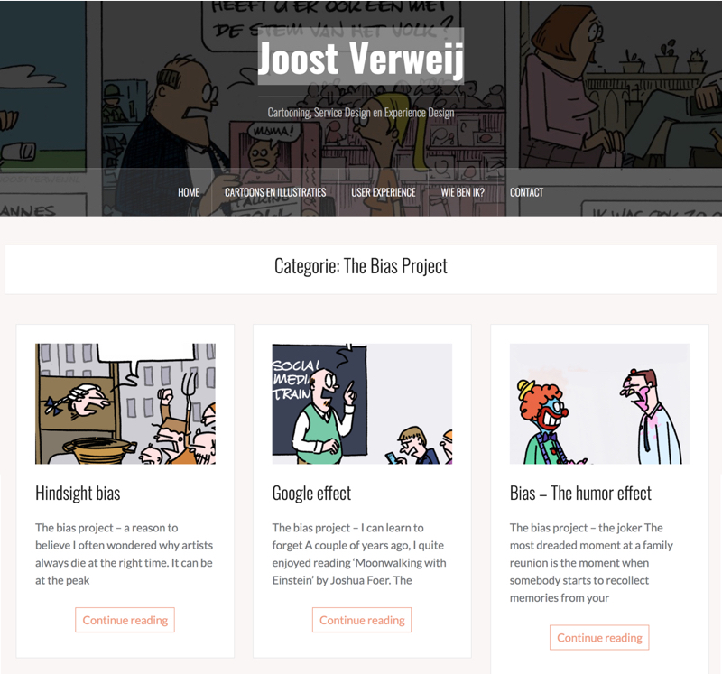

Final Domain
Domain
My domain is about Bias in life.
Research Questions
- How bias shapes our ways of thinking and how it influences the person who we have bias on, both in reality and in AI world.
- How to use design to educate people to act without bias in a light and playful way, and what’s the impact of bias education.
Precedents
Fighting Implicit Bias VR Game - Starve Ups
The simulation engineered takes educators into a classroom, where they are asked to teach a lesson to their computer-generated students. The students receive the lesson as real middle-schoolers would, hurling insults at the teacher and asking off-topic questions. The experience is used to heighten anxiety in the teachers, and then give them lessons on how to handle that stress.
The Bias Project - Joost Verweij http://www.joostverweij.nl/category/bias/
Show bias and his story in the form of a cartoon and storytelling. Then add his own thinking on bias in the area of UX Design.

Ground Truth - Richard The http://richardthe.com/GroundTruth
This project gathered together images used to train computer models, including faces, gestures, fingerprints and so on. To explore the amount of data required in the process of machine learning, what data is included and what data is excluded, and is that cause some possible biases.
Concept
AI face and you
Users describe their faces through different labels, which AI identifies to synthesize a face, and then compares the differences between ai-generated faces and real ones. To allow users to experience the biases that AI creates when consuming data.
Thought of audience: People who can get access to AI
Bias slot machine
Slot machines are no longer defined by luck, but by gender, skin color, and clothing. The user does not know the mechanism of the slot machine, but there are certain people who always win and others who never win. And that’s exactly the mechanism of prejudice in life, without fairness, without principle, some people get preferences.
Thought of audience: Everyone
Bias story website or book
Thought of audience: Young people or children.